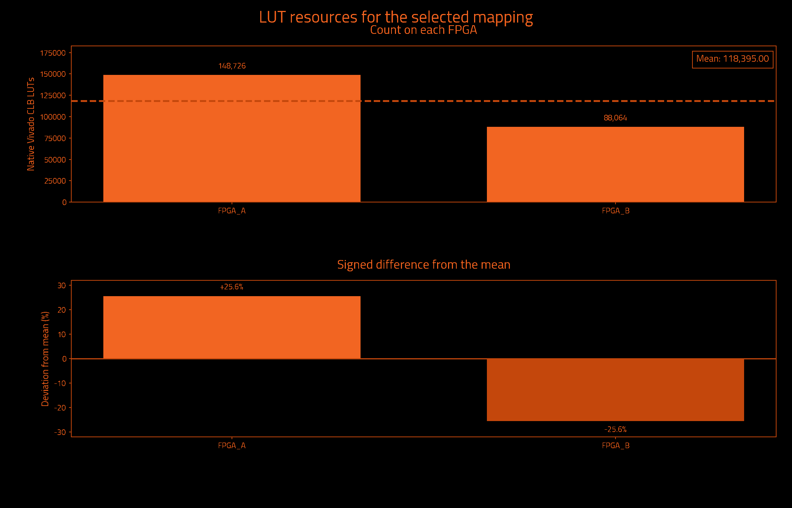
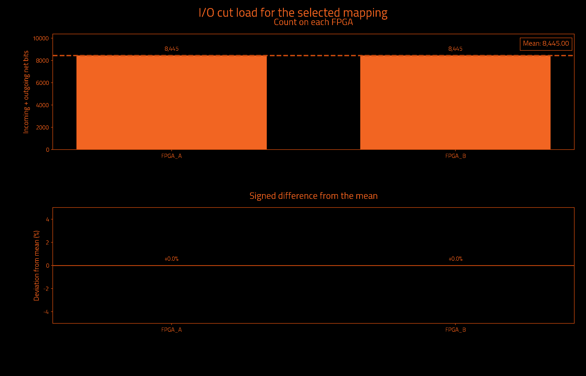
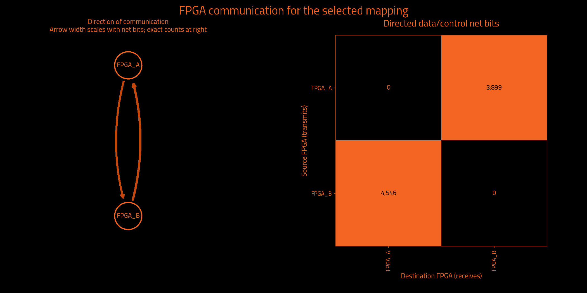

Selected mapping for 2 FPGAs. The plots and resource counts describe the selected best accepted mapping, even when the final search attempt was worse.
Status: HISTORICAL_METRICS_PRESERVED_BY_EXACT_OWNERSHIP_EQUIVALENCE. Selected iteration: 1 (search indices start at zero). Mapping: mapping.txt. Hard capacity checks and mapping contract checks remain acceptance gates; these plots do not replace them.
Historical measurements preserved by exact ownership equivalence. This mapping is a contract-compliant re-encoding of an earlier assignment. Its leaf owners and top-port owner are unchanged. The resource, cut, path and iteration measurements below come from that historical run; they are not a fresh Vivado measurement or a new frontend acceptance run. Both mapping hashes and the checked equivalence proof are retained in report_data.json. Downstream regroup and hardware remain unverified.
| Logical FPGA | Native Vivado CLB LUTs | Device LUT utilization | Hard LUT cap | Outgoing net bits | Incoming net bits | Total I/O net bits |
|---|---|---|---|---|---|---|
| FPGA_A | 148,726 | 1.758% | 153,881 | 3,899 | 4,546 | 8,445 |
| FPGA_B | 88,064 | 1.041% | 153,881 | 4,546 | 3,899 | 8,445 |
| Logical FPGA | Target device | Registers | Block RAM tiles | DSP blocks | UltraRAM blocks |
|---|---|---|---|---|---|
| FPGA_A | xcvp1902 | 148,225 | 4.0 | 0 | 0 |
| FPGA_B | xcvp1902 | 84,316 | 0.0 | 0 | 0 |


A cut is a signal bit that crosses an FPGA ownership boundary. These counts describe the logical payload that a later prototyping transport or pinmux flow must carry. They are not physical package pin counts, bus counts, transport routing, a pinmux compression ratio, or a DUT clock prediction. A bus contributes one canonical net per connected bit. These charts count FPGA-to-FPGA connections; top-level external ports have no invented FPGA home. A cut hypergraph edge is an optimization-model connection; hypergraph transfers can differ from the complete net-bit census.
| Signal category | Unique net bits crossing any boundary | Directed source/destination net-bit pairs |
|---|---|---|
| Data and functional synchronous control | 8,445 | 8,445 |
| Clock only | 1 | 1 |
| Reset only | 40 | 40 |
Board: j4.phd; selected FPGA count: 2; direct connected pairs: 1. Logical FPGA labels in mapping.txt are separate from physical board locations. The declared link counts guide placement and relative communication cost; these reports do not route transport or certify physical link capacity.
| Logical FPGA | Physical topology location | Direct selected neighbors |
|---|---|---|
| FPGA_A | C01/S01/E | 1 |
| FPGA_B | C01/S01/F | 1 |
| FPGA | Neighbor | Declared lanes | Wires at topology minimum compression |
|---|---|---|---|
| FPGA_A | FPGA_B | 16 | 1,024 |

A snake path crosses between FPGAs and passes through combinational logic before a register captures it. Repeated crossings on the same register-free path can reduce the usable DUT clock. The partitioner compares several complementary measurements rather than equating a lower total cut count with a faster design.
| Measurement | Before local cleanup | Selected result | Meaning and limit |
|---|---|---|---|
| Worst minimum physical link hops without a register | 4 | 3 | Lower bound from the declared topology; not a routed transport path. |
| Worst FPGA boundary crossings without a register | 4 | 3 | Largest number of ownership changes on a modeled combinational path. |
| Extra crossings summed over modeled endpoints | 176,123 | 27,942 | For each endpoint, add crossings beyond the first; this counts path severity, not distinct nets. |
| Combinational primitives on transit paths | 12,523 | 9,205 | Logic that receives a remote signal and can forward it to another FPGA without a register capture. |
| Directed hypergraph transfers | 7,790 | 8,440 | Sum of destination partitions beyond the first over modeled hyperedges; not the full net-bit I/O census. |
| Sampled source timing paths scored | Unavailable | 1,000 | Sampled Vivado paths only; this is not all-path timing closure. |
| Weighted cost on sampled source timing paths | 0.0 | 0.0 | A relative ranking cost; not measured FPGA-to-FPGA delay or achieved DUT frequency. |
Before local cleanup refers to the selected candidate before its local refinement passes. It is not necessarily the first iteration or a separate baseline partitioner. The search-history table below compares complete iterations.
Timing sample coverage: exported sampled native setup paths only; not all-path STA. Path model: primitive conservative data arcs; top IO has no FPGA home. Timing and topology values are model guidance, not post-regroup timing closure.
More iterations give the solver additional opportunities; improvement is not guaranteed. The accepted best candidate is retained. A later row can be worse or rejected. The table distinguishes hard cap failures and reported model/search limitations; a nonselected row is not automatically invalid.
| Iteration | Disposition | Worst register-free crossings | Extra endpoint crossings | Transit primitives | Hypergraph transfers | Utilization imbalance |
|---|---|---|---|---|---|---|
| 0 | Rejected: hard LUT cap exceeded | 3 | 23,557 | 5,865 | 8,558 | 31.49% |
| 1 | Selected best accepted mapping | 3 | 27,942 | 9,205 | 8,440 | 25.62% |
| 2 | Rejected: hard LUT cap exceeded | 2 | 19,666 | 5,385 | 8,569 | 30.82% |
| 3 | Not selected | Unavailable | Unavailable | Unavailable | Unavailable | Unavailable |
| 4 | Not selected | Unavailable | Unavailable | Unavailable | Unavailable | Unavailable |
Every figure describes the exact mapping identified below. Native resources count the original synthesized design assigned to each FPGA; future wrapper, transport, clocking and debug resources are outside this count. The 75% LUT policy, when selected, is an engineering capacity bound rather than a guarantee of routing or timing closure. Mapping ordering, exact paths, residual ownership and nearest-ancestor redundancy rules are checked separately before publication.
{
"status": "HISTORICAL_METRICS_PRESERVED_BY_EXACT_OWNERSHIP_EQUIVALENCE",
"backend_version": "1.6.2",
"partition_preset_requested": "default",
"frontend_sha256": "d4dd69ef7849e0e5770e1ea0173f2106b1f1ec13ccc9303f7e8eaf9f3bc7237c",
"native_timeout_seconds": 7200.0,
"native_timeout_scope": "persistent checkpoint startup and each resource request; batch commands unaffected",
"topology_sha256": "81cbe6e83afb0c4b396c376a11ce80bc5e221d12b6c8992712e00efac17c3704",
"topology_source_sha256": "6f393e7eee76cbf20cd96e46f52c8c0a34be2365c7222aa6cf7abfe87c7e1b83",
"fpga_count": 2,
"native_backend_invoked": true,
"preferred_native_balance": 0.2,
"selection_policy_version": 3,
"native_balance_absolute_tolerance": 1e-12,
"effective_solver_epsilon": 0.3,
"effective_refiner_scalar_balance": 0.3,
"native_balance_search_envelope": 0.3,
"target_capacity_dependency_manifest_sha256": "18a3ac71857350176b8d15449e6cf21f106a9c902bd439a5a7d9d722c218d2c3",
"target_capacity_dependencies_sha256": {
"C:\\Users\\Wrelks\\Desktop\\upgrade_partitioner_handle_large_designs\\RapidWright\\scripts\\partition\\target_capacity.py": "652db231c4c19cfb2aa7bea140c1184d6f51162be857358b94152b3a2661f992",
"C:\\Users\\Wrelks\\Desktop\\upgrade_partitioner_handle_large_designs\\topologies\\j4_board_topology.json": "6f393e7eee76cbf20cd96e46f52c8c0a34be2365c7222aa6cf7abfe87c7e1b83",
"C:\\Users\\Wrelks\\Desktop\\upgrade_partitioner_handle_large_designs\\topologies\\j4_board_topology.json.targets.json": "25db82ebe61166d1d1998042eaa07ad9c843238119e5dd6e16e70695249afcd4",
"C:\\Users\\Wrelks\\Desktop\\upgrade_partitioner_handle_large_designs\\RapidWright\\scripts\\partition\\part_catalog\\vivado_2025_1_parts.tsv": "a402de944fbd660743f6a7ff12403060e886627439826186600da78618e6a1fe",
"C:\\Users\\Wrelks\\Desktop\\upgrade_partitioner_handle_large_designs\\RapidWright\\scripts\\partition\\part_catalog\\vivado_2025_1_parts.tsv.identity.json": "c5937f61bb02a289745eee9e8cc359b56692ed908e206cf549830da035957707"
},
"effective_logical_balance": 0.5,
"logical_balance_policy": "automatic_uniform_or_unspecified_native_caps",
"logical_balance_requested": null,
"logical_resource_capacities_explicit": false,
"engine_manifest_sha256": "b64272b8c469cffdf98ea76b1afcae5799a0fa0bc63d855ece820af18d841f8a",
"source_pair_association": {
"version": 1,
"mode": "supplied_manifest_legacy",
"original_receipt": "C:\\Users\\Wrelks\\Desktop\\upgrade_partitioner_handle_large_designs\\LSUT_2\\work\\partition_experiment\\aes64_96951b4_reference\\export_receipt.json",
"receipt_snapshot": "C:\\Users\\Wrelks\\Desktop\\upgrade_partitioner_handle_large_designs\\work\\a5e\\k2\\v5a\\inputs\\source_pair_receipt.json",
"original_receipt_sha256": "51706b8a9698d70d0b4b27916824b373e4d04003fe5670dbd1d3e8bd9ba2b9dd",
"receipt_snapshot_sha256": "51706b8a9698d70d0b4b27916824b373e4d04003fe5670dbd1d3e8bd9ba2b9dd",
"input_edif": "C:\\Users\\Wrelks\\Desktop\\upgrade_partitioner_handle_large_designs\\LSUT_2\\work\\partition_experiment\\aes64_96951b4_reference\\post_synth.edf",
"input_edif_sha256": "7fc2948596c3830462964176aa70a8cc2c794cb0c77c0b7a3d30adb6924a8d78",
"checkpoint": "C:\\Users\\Wrelks\\Desktop\\upgrade_partitioner_handle_large_designs\\LSUT_2\\work\\aes_farm\\partition_input_c64_96951b4\\mapped.dcp",
"checkpoint_sha256": "b70f97edb03784c4c50bf3d5de1c434666f8929e9acdb2f9d4de2e77a8933300",
"native_primitives": "C:\\Users\\Wrelks\\Desktop\\upgrade_partitioner_handle_large_designs\\LSUT_2\\work\\partition_experiment\\aes64_96951b4_reference\\leaf_primitives.tsv",
"native_primitives_sha256": "6ab9a32004084fa5edf922a5e353fbc3b101a00063cd318309d4fa31fd152fa3",
"producer_evidence_verified": false,
"export_run_association": "Supplied PASS manifest asserts one export association; producer command, actual native exit0 and completion are not verified",
"scope": "Exact payload and receipt-byte consistency; no arbitrary EDIF/checkpoint electrical-equivalence or cryptographic-authenticity proof"
},
"source_pair_provenance_sha256": "40f56725195bdcffc994fffbfc0c4b6d35b7c4ff4b011435a34b580fcc9abf6b",
"java_heap": "16G",
"expanded_native_leaf_count": 517544,
"timing_guidance": "sampled_source_STA",
"timing_paths_sha256": "a02b76c832188b1d274719404fb4bc193374bac7e8d14b7f6b9b90df68af4f38",
"extra_delay_ns_per_crossing": null,
"native_artifact_storage": "verified_lossless_compression",
"native_oracle_mode": "persistent_original_checkpoint",
"native_residency_policy": "Probe after Java; retain only when measured available RAM covers the next heap, 8 GiB overhead and a prior-HGR native solver reserve",
"native_residency_decisions": [
{
"iteration": 0,
"stage": "after_java",
"available_bytes": 105481314304,
"decision": "load_native_probe"
},
{
"iteration": 1,
"stage": "before_java",
"available_bytes": 106939301888,
"prior_hgr_bytes": 6152392,
"native_solver_reserve_bytes": 2344360192,
"decision": "retain"
},
{
"iteration": 2,
"stage": "before_java",
"available_bytes": 106562408448,
"prior_hgr_bytes": 6216895,
"native_solver_reserve_bytes": 2346424288,
"decision": "retain"
},
{
"iteration": 3,
"stage": "before_java",
"available_bytes": 106104131584,
"prior_hgr_bytes": 6216895,
"native_solver_reserve_bytes": 2346424288,
"decision": "retain"
},
{
"iteration": 4,
"stage": "before_java",
"available_bytes": 105707704320,
"prior_hgr_bytes": 6216895,
"native_solver_reserve_bytes": 2346424288,
"decision": "retain"
}
],
"native_oracle_scripts_sha256": {
"C:\\Users\\Wrelks\\Desktop\\upgrade_partitioner_handle_large_designs\\RapidWright\\tools\\native_resource_session.py": "caa467021ca9a907b233f52d086d2a5858b08111ba950b718273964f36bd0ca5",
"C:\\Users\\Wrelks\\Desktop\\upgrade_partitioner_handle_large_designs\\RapidWright\\tools\\resource_session.tcl": "dc660b593517075ee79bc42487cdeff95b075cc8f1fc1edbd041e05d9ba17d2a",
"C:\\Users\\Wrelks\\Desktop\\upgrade_partitioner_handle_large_designs\\RapidWright\\tools\\report_partition_resources.tcl": "255ddb495ba953f77a19a373481cbfbde7ca2f127c6f595764b2a101a817ef38",
"C:\\Users\\Wrelks\\Desktop\\upgrade_partitioner_handle_large_designs\\RapidWright\\tools\\archive_native_request.py": "1053024a0794942eeb12bcdd77827541220f05d7355089f8113cac90f42eeb6b"
},
"capture_cohort_cleanup": {
"requested": "off",
"effective": "off",
"backend_supported": true,
"reason": "requested_off"
},
"native_feedback_quality_guard": "accepted_mapping_anchor",
"quality_guard_policy": "ranked",
"minimum_link_hop_analysis_available": true,
"selected_iteration": 1,
"native_cap_check": "PASS",
"native_balance_target_met": false,
"preferred_native_balance_target_met": false,
"native_search_envelope_met": true,
"new_policy_complete_within_search_envelope": true,
"source_input": "C:\\Users\\Wrelks\\Desktop\\upgrade_partitioner_handle_large_designs\\LSUT_2\\work\\partition_experiment\\aes64_96951b4_reference\\post_synth.edf",
"source_sha256": "7fc2948596c3830462964176aa70a8cc2c794cb0c77c0b7a3d30adb6924a8d78",
"checkpoint_sha256": "b70f97edb03784c4c50bf3d5de1c434666f8929e9acdb2f9d4de2e77a8933300",
"native_inventory_sha256": "6ab9a32004084fa5edf922a5e353fbc3b101a00063cd318309d4fa31fd152fa3",
"hard_native_clb_lut_caps": {
"FPGA_A": 153881,
"FPGA_B": 153881
},
"selection_policy": "Hard capacities and one cut/topology budget; complete paths; worst minimum-link hop lower bound, logical register-free crossings, sampled source timing cost, endpoint excess, transit; native search-envelope limitation tier, transfers, topology cost, then fine balance; preferred balance remains soft",
"minimum_link_hop_scope": "Declared selected adjacency shortest-link lower bounds; not actual transport routing, congestion or nanoseconds",
"scope": "Original synthesized netlist subset utilization; no future wrapper/transport resources included",
"accepted_mapping_sha256": "7b8fb305f1a3044fbb19195afee06b313cb56279af47111862827c6e1b892c64",
"historical_metrics_scope": "Original native and source-graph measurements preserved by exact ownership equivalence; not rerun"
}{
"vivado_resources.tsv": "40868fe0aa11fa6b289d02364ed7e34bf7f675cc075248e42f8bc80d7434a35c",
"lut_report.txt": "756f12cea031f1ede6d2e86c9e541b697b248ea92387e95d86c4bab12dbd6308",
"fpga_control_categories.tsv": "f4ecca715395aeb69abbc7889862cec4f9bfb5f49e52728521251fcbf65f7637",
"hardware_quality.txt": "81a615ee417bb9bf0921283bb4cc0b1de3012aed4772986e9b483b630d9c929e",
"run_provenance.json": "94bfe99fda25dac625960f7bb2fb22ce9272c2b50400b6df392ab0296074c7c9",
"target_capacity.json": "93054a4202a911839bae0e000d1f764c5092282047e29c0f0f80128b61a0a872",
"native_lut_caps.tsv": "245fac05f89ddab3d24c20b79a8f44fb863743d5f695f446be107cf1aa4c9861",
"cells.txt": "b7442687a010a0c8664f85b7e2675d705a68c3183af33b6d1006722475fab3ee",
"topology_manifest.json": "98f6cbbf1ec5449da68fcbdbce969f413411ae9bf87188cde3159e8db99a575b"
}